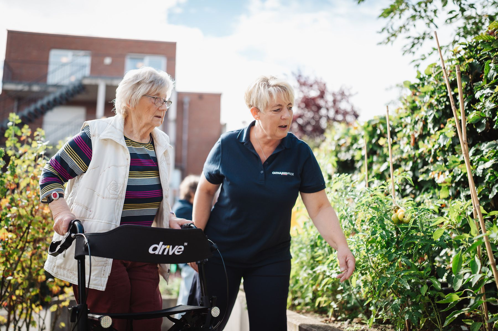
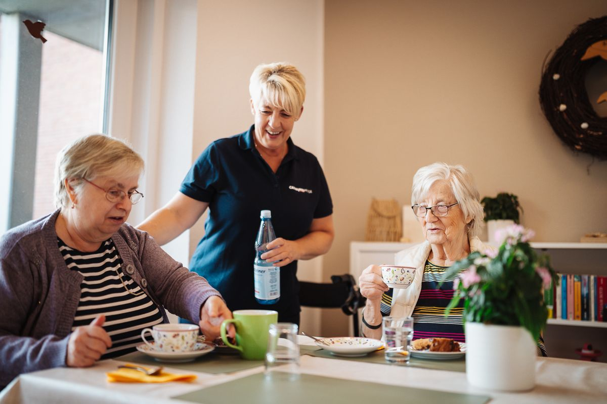
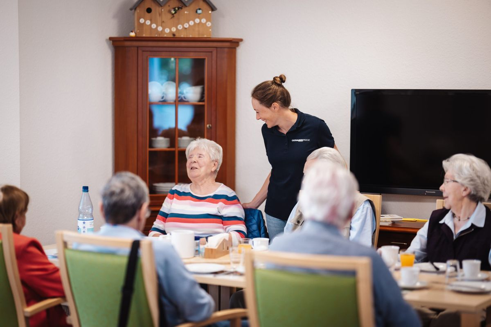
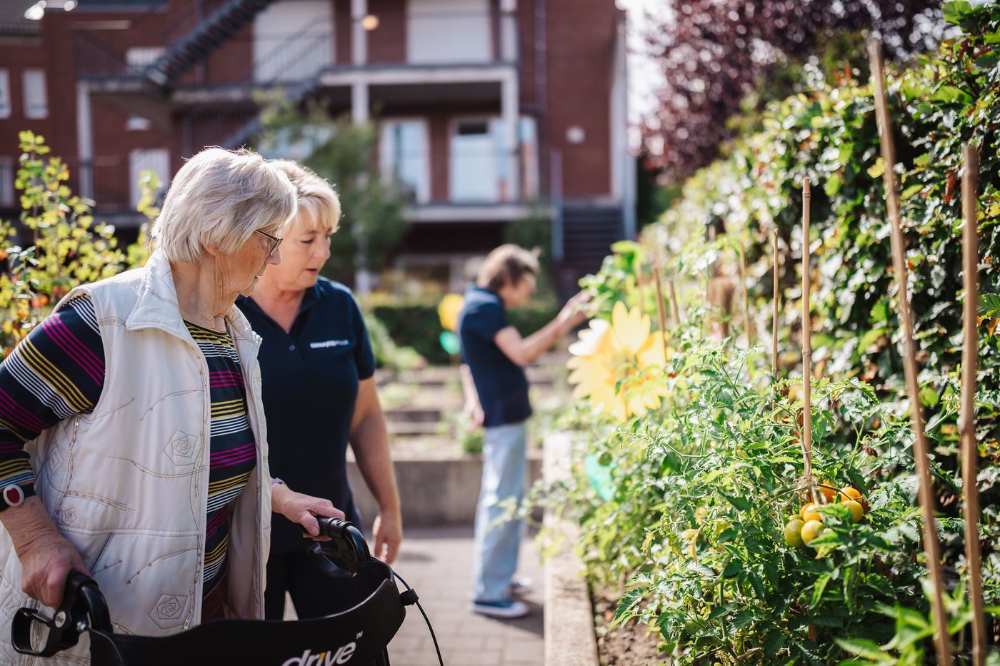
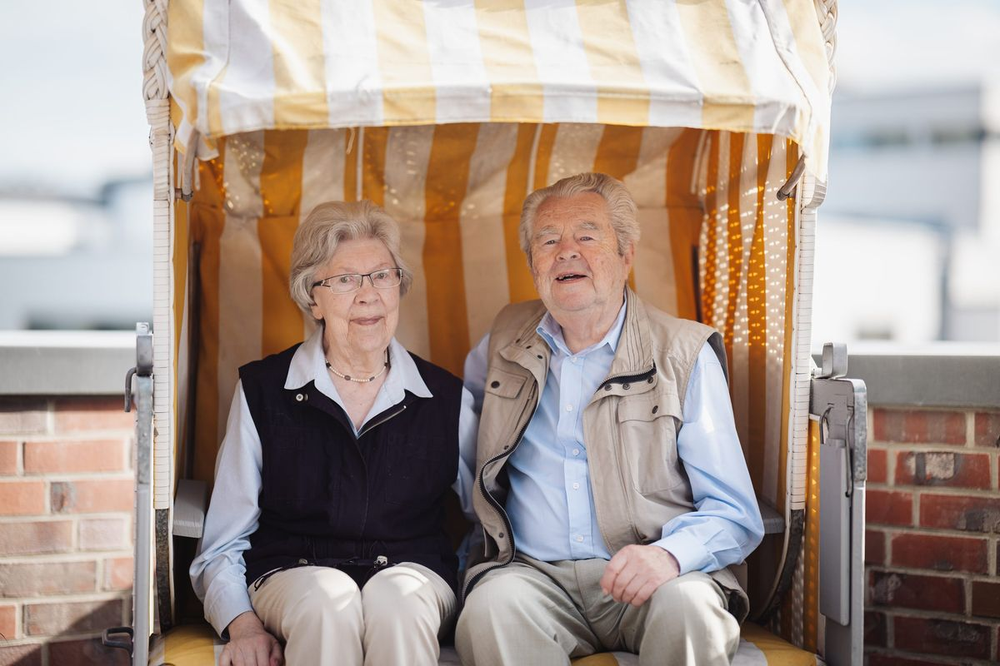

Wo dürfen wir Sie begleiten?
Wählen Sie Ihren Ort. Sie sehen sofort, was Cathamed dort für Sie hat und wen Sie anrufen.
Ihr Cathamed vor Ort
28 Einrichtungen in elf Orten. Für jeden Ort steht hier, was es gibt, und die eine Nummer, unter der Ihnen jemand weiterhilft.
Was brauchen Sie gerade?
Ob für Sie selbst oder für Ihre Eltern: Hier finden Sie, was in welcher Lage hilft.

Ganzheitliche Pflege in Ihrer gewohnten Umgebung
- Grundpflege: Waschen, Anziehen, Essen, sicher aufstehen und zu Bett gehen.
- Behandlungspflege: vom Arzt verordnet, zum Beispiel Insulin, Wundversorgung, Kompressionsstrümpfe. Die Krankenkasse trägt die Kosten.
- Verhinderungspflege: Wir springen ein, wenn Sie als Angehörige einen Termin haben oder Urlaub brauchen.
- Haushalt und Alltag: Einkaufen, Wäsche, Gesellschaft beim Spaziergang.
- Eine feste Pflegekraft: Durch die Bezugspflege haben Sie und Ihre Angehörigen immer dieselbe Ansprechperson.

Tagsüber in guter Gesellschaft, abends zu Hause
- Sechs Tagespflegen: Edelweiß in Borghorst, Kiepenkerl in Ochtrup, Augenblick in Rheine, Lindenhof in Hauenhorst, Am Johannesgarten in Greven, Hesselblick in Sassenberg.
- Ab Pflegegrad 2 übernimmt die Pflegekasse einen Großteil der Kosten.
- Pflegende Angehörige gewinnen Freiraum und wissen ihre Lieben gut aufgehoben.
- Schnuppertag: einen ganzen Tag kostenlos und unverbindlich ausprobieren.

Leben in Gemeinschaft, rund um die Uhr betreut
- Ein eigenes Zimmer, gemeinsame Küche, Garten oder Terrasse, familiäres Miteinander.
- 24 Stunden am Tag, sieben Tage die Woche sind Mitarbeitende von Cathamed im Haus.
- Gerade bei Demenz ein sicheres, liebevoll begleitetes Zuhause und für viele eine gute Alternative zum Pflegeheim.
- Wohngemeinschaften in Steinfurt, Greven, Rheine, Hauenhorst, Ochtrup, Beelen, Münster, Sassenberg und Laer.

So selbstständig wie möglich, so unterstützt wie nötig
- Eigene, barrierefreie Wohnung mit eigener Haustür.
- Pflege und Hilfe sind im Haus, wenn sie gebraucht werden.
- Service-Wohnen in Borghorst (Stadtvilla), Greven, Ochtrup (Atrium), Sassenberg und Laer.

Sie fragen, wir antworten
- Die Pflegeberatung ist für Sie kostenlos, auf Wunsch kommen wir zu Ihnen nach Hause.
- Vor der Entlassung aus dem Krankenhaus: Was wird zu Hause gebraucht?
- Vor dem Gutachten zum Pflegegrad: Worauf es ankommt.
- Welche Hilfen zahlt die Pflegekasse, und was passt zu Ihrer Familie?
Gerade frei
Diese Zimmer und Wohnungen können Sie jetzt anfragen. Unsere Pflegeberatung begleitet Sie vom ersten Gespräch bis zum Einzug.
Stand: 8. November 2026
Ein Job mit Herz und Verstand. In deinem Ort.
Über 450 Kolleginnen und Kollegen arbeiten bei Cathamed. Such dir den Ort aus, der zu deinem Leben passt, und bewirb dich in zwei Minuten.
Alle Stellen mit Details stehen auch im Bewerberportal. Fragen zur Ausbildung: Maike Hoppe, 02552 50402-40.
- Von Anfang an unbefristetsicherer Arbeitsplatz
- Vergütung in Anlehnung an den TVöDdazu betriebliche Altersvorsorge
- Fortbildungen bezahltregelmäßig, vom Arbeitgeber finanziert
- Aufsteigen und wechselnzwischen Orten und Bereichen
- Ausbildung ab 2027Pflegefachfrau, Pflegefachmann, Pflegefachassistenz
- Quereinstieg und Umschulungauch mit Abschluss aus dem Ausland
Kurz bewerben
Kein Anschreiben nötig. Wir rufen dich an.
Entwurf, wird nicht versendetÜber Cathamed
„Fürsorge von Mensch zu Mensch“Unser Leitbild
1995 fing Cathamed in Steinfurt-Borghorst als ambulanter Pflegedienst an. Heute begleiten über 450 Mitarbeiterinnen und Mitarbeiter Menschen in 28 Einrichtungen im Münsterland, zu Hause, in der Tagespflege, in Wohngemeinschaften und im Service-Wohnen.
Jeder Kunde hat dauerhaft eine feste Pflegekraft, die sich um seine Belange kümmert. So haben auch die Angehörigen immer eine konkrete Ansprechperson.
Cathamed ist parteipolitisch und konfessionell ungebunden, Partner aller Kranken- und Pflegekassen und Mitglied im Bundesverband privater Anbieter sozialer Dienste (bpa).
Schreiben Sie uns
Wir melden uns bei Ihnen. Oder Sie rufen direkt an:
- Pflegeberatung, freie Plätze02552 50402-60
- Zentrale Steinfurt02552 93860
- Bewerbung und Ausbildung02552 50402-40
- E-Mailinfo@cathamed.de